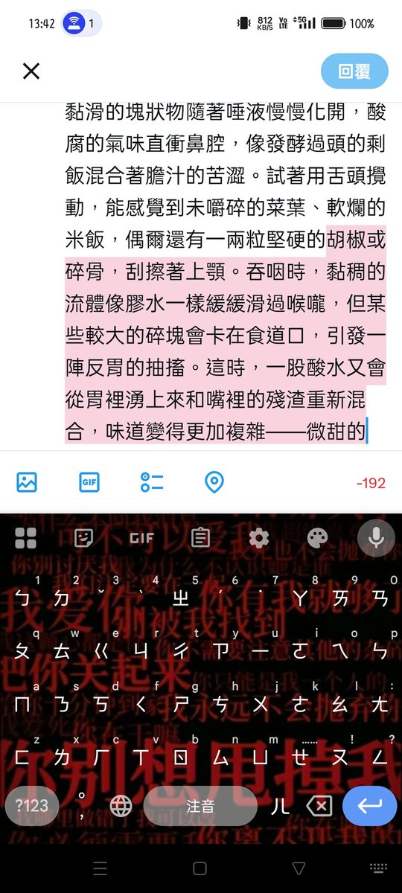

^^
@Reinai_
@DDzhanshou5150 小豬佩奇的嘔吐物是令人反復迷戀的。把嘔吐物含進嘴裡時，溫熱黏稠的觸感立刻包裹住舌頭，半消化的食物殘渣混著胃酸的刺激在口裡擴散。黏滑的塊狀物隨著唾液慢慢化開，酸腐的氣味直衝鼻腔，像發酵過頭的剩飯混合著膽汁的苦澀。試著用舌頭攪動，能感覺到未嚼碎的菜葉、軟爛的米飯，偶爾還有一兩粒堅硬的

早露泡泡兔
@DDzhanshou5150
看看你的qwq https://t.co/bgkENjh42R